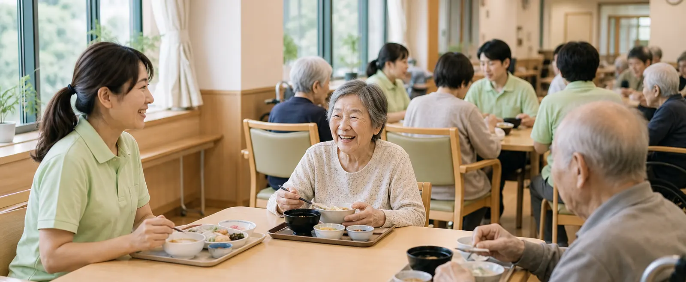
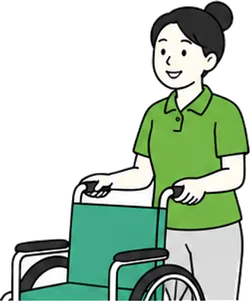

介護職員
入所・通所・訪問の各施設で、食事・入浴・排せつの介助と、日々の暮らしの支えを担います。無資格・未経験から始められます。
主な勤務先特別養護老人ホーム、グループホーム、デイサービスほか

Reason
陽凪会で働く職員に、続けている理由を聞きました。よく挙がった5つを紹介します。
ひとつの施設の職員は多くても50人ほど。入居者さんとも、同僚とも、名前で呼びあえる距離で働きます。
記録は見たままを書くのが決まりです。夜勤明けの申し送りが短く済むのは、その積み重ねのおかげです。

介護職員初任者研修は法人内で受講でき、受講料は法人が負担します。介護福祉士の受験対策講座もあります。
勤務表は翌月分を前月の10日に締めます。希望休は月に3日まで、先に出した人から順に通しています。
入所から訪問、こどもの支援まで15施設があります。暮らしが変わったときは、異動の相談ができます。
Jobs
入所・通所・訪問の各施設で、食事・入浴・排せつの介助と、日々の暮らしの支えを担います。無資格・未経験から始められます。
主な勤務先特別養護老人ホーム、グループホーム、デイサービスほか
入居者さんの健康管理、服薬の確認、協力医療機関との連携を担います。訪問看護では、ご自宅での療養を支えます。
主な勤務先陽凪園、陽凪園 若草、陽凪デイサービスセンター 北ほか
入所や利用の相談窓口として、ご本人・ご家族、ケアマネジャー、病院との間をつなぎます。
主な勤務先特別養護老人ホーム、デイサービス
ケアプランを作り、サービス事業所との調整を行います。地域包括支援センターでの勤務もあります。
主な勤務先陽凪園、陽凪相談支援センター、地域包括支援センターほか
児童発達支援と放課後等デイサービスで、お子さんの遊びと生活の育ちを支えます。
主な勤務先陽凪こども発達支援センター そらいろ
施設の厨房で、刻み食・やわらか食を含む毎日の食事を作ります。行事食や誕生日のおやつも担当します。
主な勤務先陽凪園、陽凪園 若草
Requirements
職種と施設によって条件が異なります。くわしくは面談でご説明します。
Care College
2018年に開いた、法人内の研修講座です。介護の仕事に必要な基礎の知識と技術を、合わせて130時間で学びます。講師は、法人の介護福祉士と看護師が務めます。
当法人の職員は受講料の負担なく受けられます。地域で家族の介護をしている方や、これから介護の仕事を考えている方も受講できます。
Entry
2027年度の新卒採用のエントリーを受け付けています。中途採用は通年で募集しています。
お問い合わせフォームから、希望の職種と施設をお知らせください。
実際の職場を見ていただき、仕事の内容や働き方をご説明します。
施設長と人事担当者による面接を1回行います。履歴書をお持ちください。
面接から1週間ほどでご連絡します。入職日はご相談のうえ決めます。
Contact
どのサービスが合うか決まっていなくても大丈夫です。
相談員が状況をうかがって、合いそうな施設をご案内します。
代表電話0866-71-4820受付時間 9:00〜17:30
資料請求・お問い合わせ